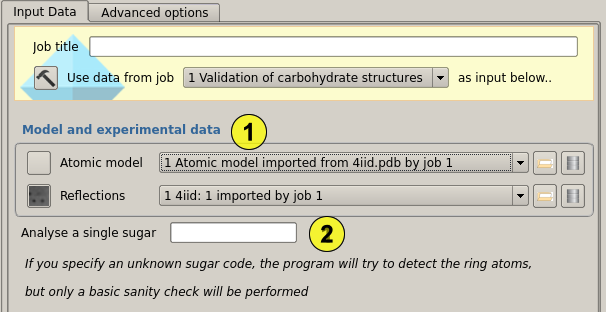
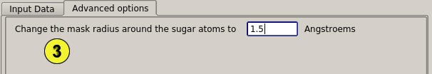
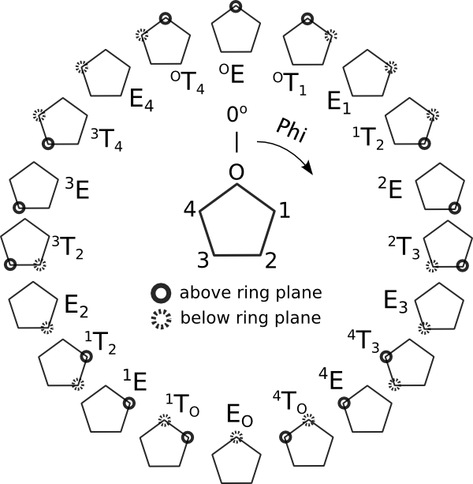
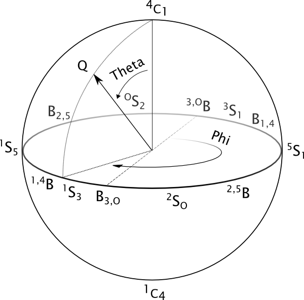
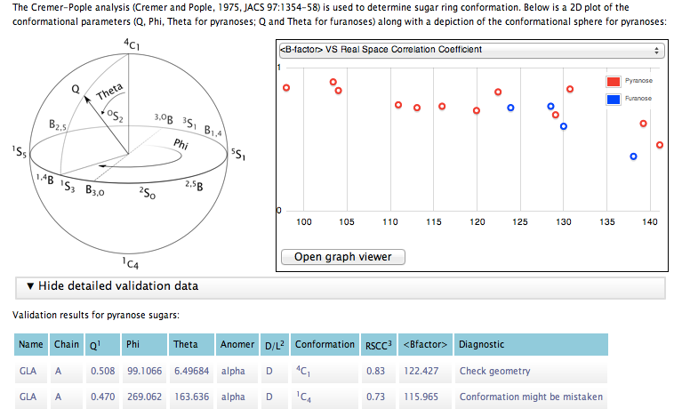

Validation of carbohydrate structures (Privateer)¶
Privateer will scan an input structure for kwown cyclic carbohydates, reporting their conformation, stereochemistry, connectivity and geometric parameters. It will also calculate a Real Space Correlation Coefficient (RSCC) against omit mFo-DFc density. It will also output 2mFo-DFc coefficients, and a visual checklist for improving the model in Coot.
Input¶

Privateer just requires a model and a set of reflections (including sigmas) to work (1). The model will be scanned for known cyclic carbohydrates (some popular Nitrogen-substituted compounds are also supported) and then the structure factor and map coefficient calculations will begin. Sugars will be omitted from phase calculation, effectively producing omit mFo-DFc map coefficients.
Once Privateer has calculated model and experimental electron densities, a correlation analysis is performed within the boundaries of a mask calculated around the studied sugar. This mask can be adjusted by tweaking its radius, as shown below. Then, a conformational (using the Cremer-Pople algorithm) and stereochemical analysis will follow.
It is possible to analyse a single sugar (supported or not) by typing its three-letter code in (2). The sugar model must follow the standard naming scheme, with C1-C5 plus O5 in the ring (C2-C6 plus O6 for ketoses).
Advanced options¶

It is possible to change the radius for the mask that is used for the correlation analysis (3). A typical value would be between 1.5 to 2.5 Angstroems, with smaller values being more forgiving with modelling errors than higher ones.
Results¶
Conformational validation¶
Cyclic carbohydrates usually have clear conformational preferences in terms of energy. Enzymes can force sugars into higher-energy conformations in order to achieve catalysis, and these conformations should indeed be kept in mind when modelling a sugar in the -1 site of an enzyme. However, most of the time (i.e. in the rest of the cases) sugars stay in their original lowest-energy conformation, which for pyranoses is either a 4C1 or a 1C4 chair. When a sugar monomer is imported from a dictionary within a graphical model building program such as Coot, its ideal coordinates reflect the lowest-energy conformation, but during the course of refinement they can get distorted and driven away to other conformations such as envelopes or half-chairs. These distortions are usually triggered by:
Weak density gradientsSometimes there is just partial density for a sugar that is known to be there (e.g. in a High-Mannose glycosylation tree), and it is the crystallographer’s decision whether to model it or not. However, atempting to refine a model with such data without the appropriate restraints - torsion restraints can help in this case - will nearly always result in distortion.Wrong linkage distance specificationForcing refinement software to restrain a link to a wrong distance will make it fit the model with an offset equal to the deviation from the correct value. This can result just in an increased total puckering amplitude (Q) value if the deviation is not too high, or a complete conformational change for higher values.Mistaken anomer or handednessTrying to fit an alpha anomer into density that supports the beta anomer instead will result on a flat ring or a conformational change.We use the well-stablished Cremer-Pople algorithm (Cremer and Pople, 1975, JACS 97:1354-58) at the core of our conformational analysis. This analysis gives one angle (Phi) and a total puckering amplitude (Q) for furanoses and two angles (Phi, Theta) and Q for pyranoses. The relationship between the different angles and conformations is reflected in the subsequent graphical representation of the conformational parameters:
 Conformational landscape for furanose sugars. Atoms without markup are roughly coplanar. This angle assignment implies a clockwise ordering of the ring atoms starting from the oxygen. An opposite-sense naming scheme would imply a 180° shift in Phi.
 Cremer-Pople sphere for pyranoses. Chair conformations are located at the poles of the sphere, with the northern hemisphere being the one predominantly occupied by D-pyranoses (due to the configuration of the carbon linked to the highest-ranked in-ring carbon). Half-chairs and Envelopes, which have been omitted in order to produce a clearer figure, are located at Theta=45° and Theta=135° in the northern and southern hemispheres respectively.
The Cremer-Pople algorithm involves the calculation of a uniquely-defined mean plane that satisfies, among other conditions, that the sum of all the vertical distances from the ring atoms to that plane is zero. The stereochemistry can also be easily worked out by calculating equivalent displacements for those atoms relevant to it. After that, Privateer-validate compares the reported conformation and stereochemistry to those calculated for the idealised, lowest-energy structure of the studied sugar. For a deeper nomenclature check, you can also use the pdb-care server at glycosciences.de (maintained by Dr Thomas Lütteke, Justus-Liebig University Giessen).
Understanding the report
Here is a look at the report window for a dataset where furanoses and pyranoses coexist:

If you choose to rebuild your structure with Coot after running Privateer, a visual guided tour of the reported issues will be automatically loaded. Torsion restraints will also be automatically turned on.